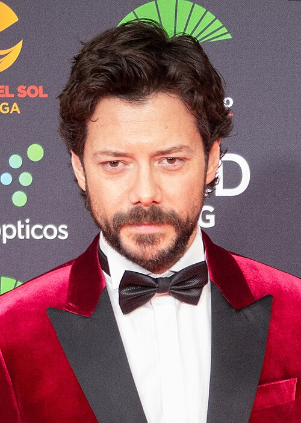
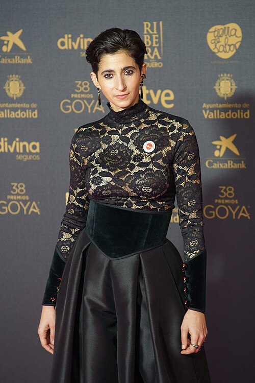

The Heist Team

Played by Álvaro Morte. The brilliant mastermind behind both heists. A man who thinks 10 steps ahead, the Professor plans every detail meticulously. He falls in love with Inspector Raquel Murillo (Lisbon), putting everything at risk.
"The perfect plan doesn't exist. But you can come close."
Played by Úrsula Corberó. The narrator of the series. A reckless and passionate young robber who joins the team after her boyfriend dies during a heist. Her impulsiveness often creates problems but also drives the story forward.
"We are the resistance. We fight against the system."
Played by Pedro Alonso. The charismatic and ruthless leader inside the Mint. A terminally ill man with a noble background, Berlin is intelligent, elegant, and dangerously unpredictable. His relationship with the Professor is complex.
"Love is the most dangerous weapon of all."

Played by Alba Flores. The head of printing operations. A strong, maternal figure who keeps the team grounded. Nairobi is an expert forger with a heart of gold. Her death in Part 4 became one of the most heartbreaking moments in the series.
"We are not thieves. We are the resistance."
Played by Miguel Herrán. The youngest member of the team and a brilliant hacker. Rio is responsible for electronic surveillance and communications. His romance with Tokyo drives much of the emotional narrative.
"I just want it to be over. I want to be free."
Played by Jaime Lorente. The son of Moscow, Denver starts as a hot-headed brute but grows into a compassionate and loyal team member. His relationship with Stockholm (a former hostage) shows his capacity for love.
"I don't want to be the same person I was before."
Played by Darko Perić. A Serbian-born former soldier and Oslo's cousin. Helsinki is physically imposing but has a gentle soul. He provides muscle for the team but also shows deep loyalty and tenderness toward his found family.
"We are family. We protect each other."
Played by Paco Tous. A former miner and Denver's father. Moscow brings decades of experience in digging tunnels and moving through underground spaces. He is warm, fatherly, and deeply cares for his son and the team.
"My son is the best thing I ever did."
The Other Side
Played by Itziar Ituño. The police inspector leading the negotiation team during the first heist. She falls in love with the Professor (without knowing his true identity) and eventually joins the team as Lisbon.
Played by Najwa Nimri. A ruthless and unpredictable police inspector who stops at nothing to catch the Professor. Pregnant and fierce, she becomes one of the most formidable antagonists in the series.
Played by Fernando Soto. Raquel's partner and friend on the police force. He supports her through the investigation but struggles with her changing loyalties.
"This series connected with audiences worldwide because it's not just about a heist. It's about human connection, resistance, and the fight for what you believe in."